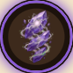
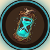
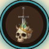
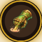
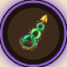

Ícones dos talentos
Versão v0.17.1 (patch) · 28/11/2026 · CONCLUÍDO
Veredito
No cartão de detalhes da árvore de talentos, os ícones de Fúria crescente, Tempo do miniboss e Dano contra chefe passavam do anel. A causa: a imagem de um .icon tinha height: 100% dentro de um grid sem trilhas, a porcentagem não se resolvia e uma arte alta mantinha a proporção e crescia (60 × 93 e 60 × 119 px em vez de 60 × 60). Agora o grid do .icon tem uma célula do tamanho da caixa, e toda arte cabe nela.
| Item | Valor |
|---|---|
| Faixa de commits | a1477641..581cfbaa: 1 fix (d316eb54), 1 docs (581cfbaa) |
Verificação de autoria do test-engineer | Não rodada (patch de 2 linhas de CSS, sem spec). No lugar dela, o novo teste e2e foi rodado contra o código sem a correção e falhou (a caixa da imagem ficou diferente da caixa do ícone); com a correção, passa. Sensor de mutantes: não rodado (não há código JavaScript mutável na mudança). |
| Revisão de UI | APROVADA (ui-review.html): árvore, seis anéis de detalhe, HUD e mochila conferidos, sem regressão em outros .icon |
| Execução do CI | 46142714897, Tests workflow em ci/talent-icon-fit, commit d316eb54: success (fonte de todos os números abaixo) |
Antes e depois






Depois da correção. Antes, as três primeiras artes ocupavam o anel de cima a baixo.
Código de produção
| Parte | Linhas adicionadas | Linhas removidas | Arquivos |
|---|---|---|---|
Backend (backend/src/main) | 0 | 0 | 0 |
Jogo (game/src sem testes, game/public/*.css) | 2 | 0 | 1 (game/public/style.css) |
Código de teste
| Suíte | Linhas adicionadas | Testes adicionados | Total da suíte no CI |
|---|---|---|---|
Backend (backend/src/test) | 0 | 0 | 1398 (1398 passaram) |
Jogo unitário (game/src/**/*.test.js) | 0 | 0 | 2729 (2729 passaram) |
e2e (game/e2e) | 30 | 1 | 888 (888 passaram) |
| Scripts de deploy | 0 | 0 | 306 (306 passaram) |
Também foram adicionados dois roteiros de screenshots em game/ui-review/ (talentIconFit.shots.js, talentIconFitBag.shots.js), que não são suíte de teste.
Cobertura de testes unitários
| Escopo | Linhas | Ramos |
|---|---|---|
| Backend, projeto todo (JaCoCo) | 98,49% | 93,72% |
| Jogo, projeto todo (Vitest v8) | 98,69% | 95,20% |
| Arquivos alterados | não medido: o único arquivo de produção é CSS, que nem v8 nem JaCoCo medem | |
Cobertura e2e
| Escopo | Linhas | Ramos |
|---|---|---|
| Código do jogo exercido pelo Playwright (istanbul, limite inferior) | 93,41% | 77,07% |
| Cenário e2e | Resultado |
|---|---|
| Talentos card: a tall icon › a tall picture fits the ring of the card and the node (Fúria crescente, Tempo do miniboss, Dano contra chefe, no cartão e no nó) | passou |
Testes falhando fora da mudança
Nenhum: as quatro suítes do CI terminaram sem falhas.
Também nesta versão
A v0.17.1 leva os commits da revisão 4 de story-scenes que vieram depois da v0.17.0 (d4012436..a1477641): novos rostos dos heróis, rosto redondo de Seraphine no prólogo e nova última fala de Kael. Eles têm relatório e revisão próprios na pasta de story-scenes.